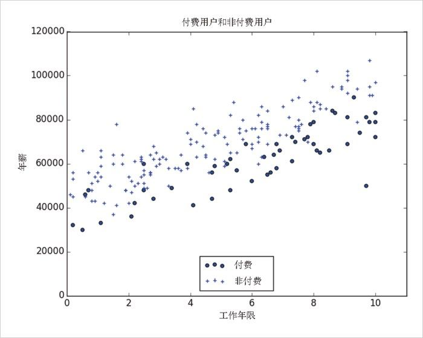
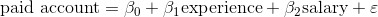
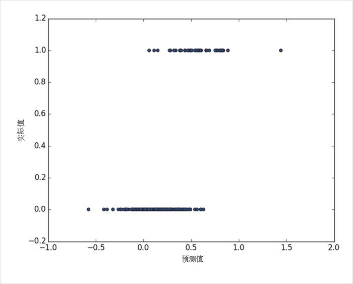

16.1 问题
我们有一个 200 人的匿名数据集，内容包括每个用户的工资、作为数据科学家的工作年限以及是否愿意成为付费用户（图 16-1）。像往常一样，对于类别型变量，它们的取值要么是 0（非付费用户），要么是 1（付费用户）。

图 16-1：付费用户和非付费用户
像往常一样，我们的数据都是存放到矩阵中的，其中每一行都是一个列表 [experience, salary, paid_account] 。下面，我们将其转换成所需要的格式：
x = [[1] + row[:2] for row in data] # 每个元素都是[1, experience, salary]
y = [row[2] for row in data] # 每个元素都是一个付费用户
很明显，第一步是使用线性回归来寻找最佳模型：

当然，在利用这种方式对这个问题进行建模方面，我们已经轻车熟路了。
结果如图 16-2 所示：
rescaled_x = rescale(x)
beta = estimate_beta(rescaled_x, y) # [0.26, 0.43, -0.43]
predictions = [predict(x_i, beta) for x_i in rescaled_x]
plt.scatter(predictions, y)
plt.xlabel("predicted")
plt.ylabel("actual")
plt.show()

图 16-2：使用线性回归预测付费用户
但这种方法会导致两个紧密相关的问题。
我们希望输出结果为 0 或者 1，用来表明会员资格类型。如果输出值介于 0 和 1 之间的话，那也很好，因为我们可以将其解读为概率——如果输出值是 0.25，可以表示成为付费会员的可能性为 25%。但是，线性模型的输出值有时候会是非常大的正数乃至负数，这时候就不好解释了。实际上，这个例子中许多预测值是负数。
线性回归模型假定 x 的各列与误差不相关。但是这里 experience 一列的回归系数为 0.43，也就是说，数据科学家生涯越长，就越有可能成为付费用户。这意味着对于职业生涯较长的人，模型会输出一个很大的数值。但是我们都知道，有效值最大只能到 1，也就是说输出值越大（即数据科学家生涯越长），对应的误差项的负值也就越大。由于这个原因，我们对 beta 的估计是有偏的。
相反，我们期望的情况是这样的：如果 dot(x_i, beta) 的输出值是较大的正数，那么让它对应的概率接近 1；如果输出值是一个较大的负数，那么让它对应的概率接近 0。为此，我们可以应用另一个函数来实现这种效果。